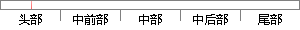

of the LSP ,the theory of the LSP and the usage of LSP are
片段位置图

相似结果
相似片段：
, a support vector of the same class with a value α smaller than parameter C and with the maximum distance to the prototype is chosen. The straight line defined by these two points is the first axis of the ellipsoid. The rest of the axes and the associated vertices are determined by simple geometry. To construct hyper-rectangles, a similar procedure is followed. The only difference is that lines parallel to the axes are used to define the axes of the associated el
| 对比库： | WriteCheck云资源库 |
| 来源： | clei.org 查看来源 |
| 发布时间： | 2016-05-05 |
| 相似率 | 54.55% （轻度抄袭） |